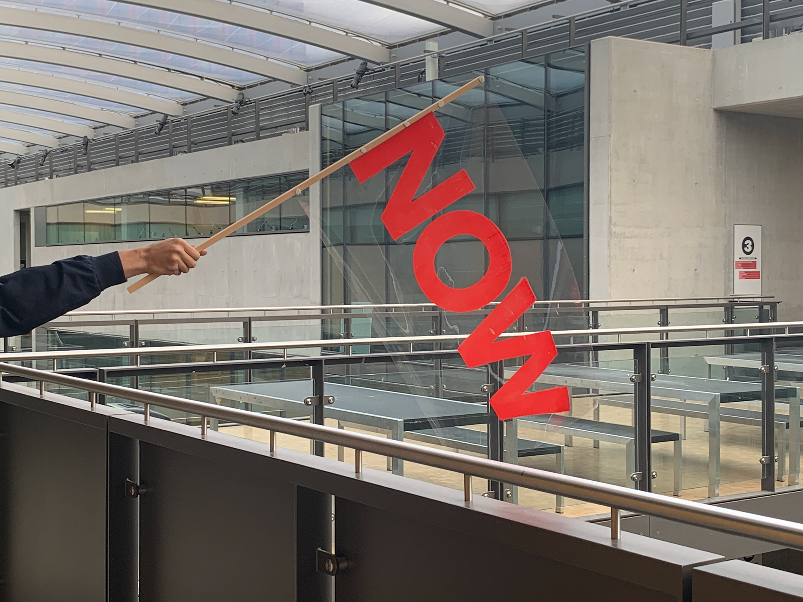
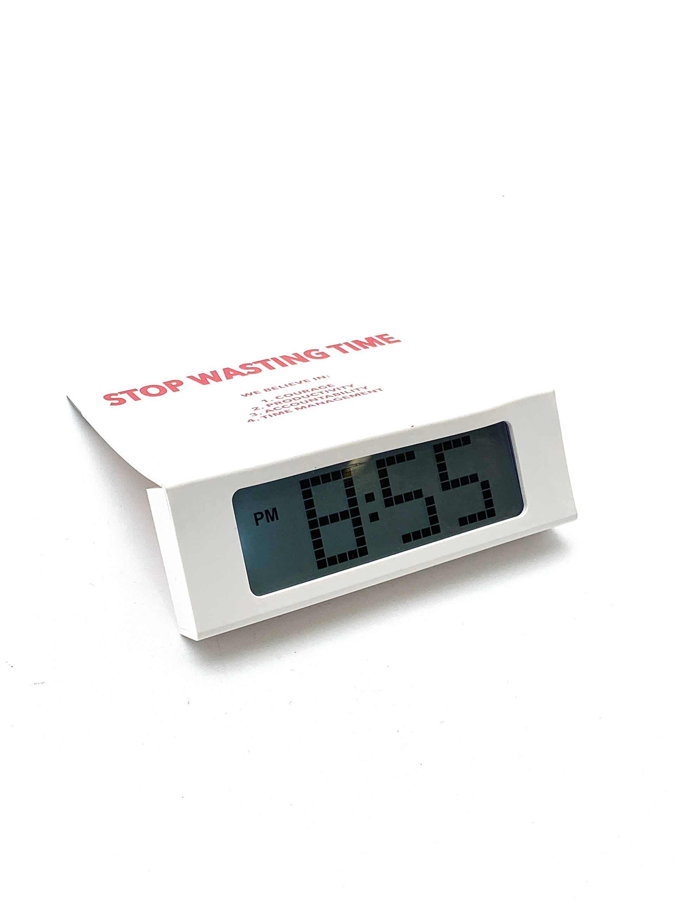
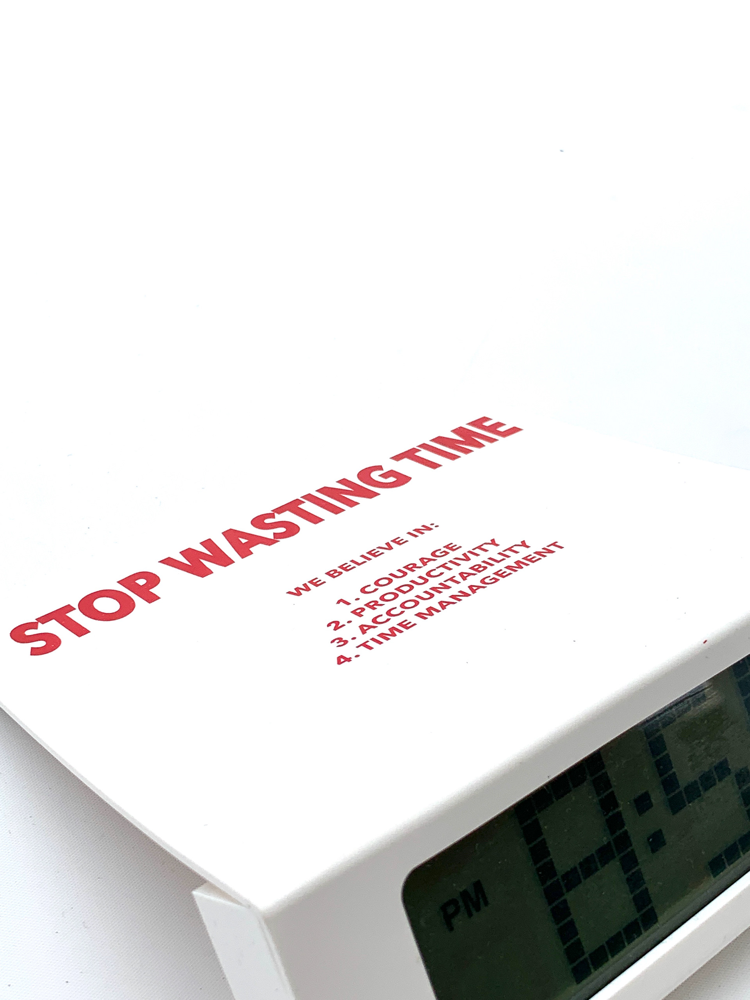
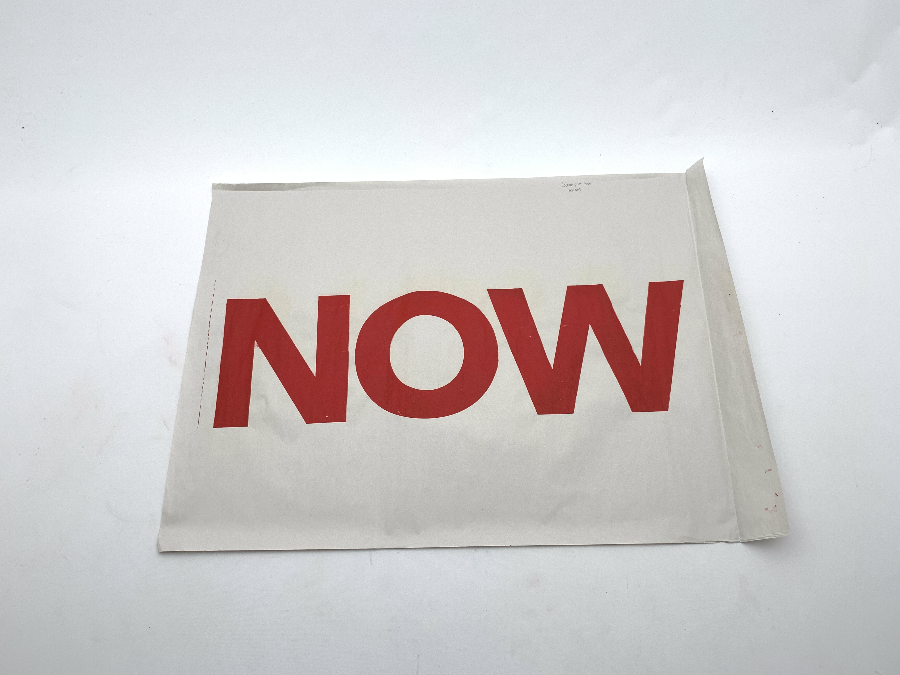
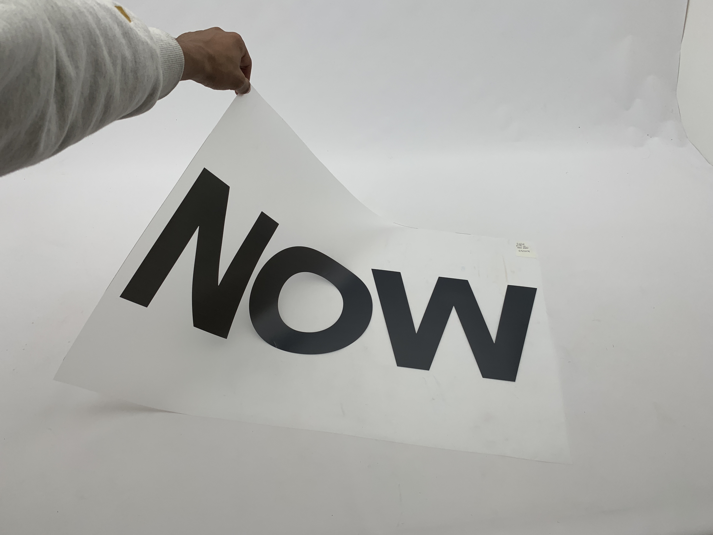
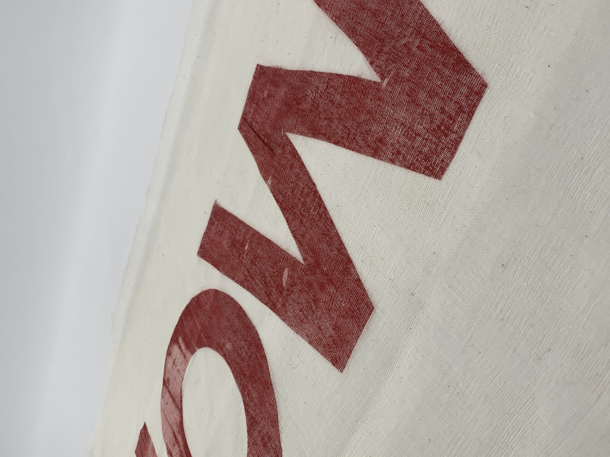
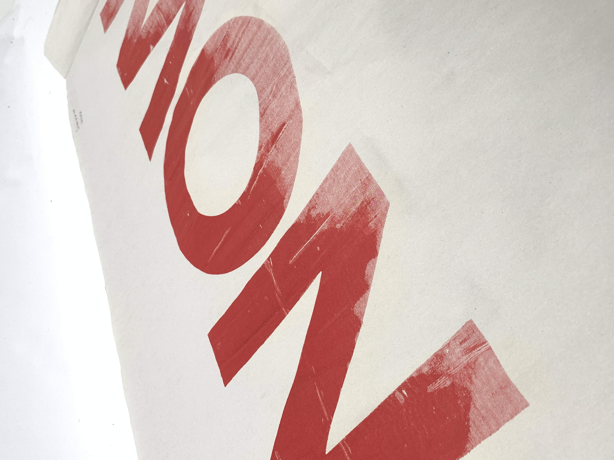

Project
Stop Wasting TimeYear
2020Client
PersonalDiscipline
IdentityMy response to a breif that asked me to design a flag and manefesto for a pseudo activist group. I developed the flag by screenprinting the slogan on an A1 sheet of acetate. I used waterslide paper to print the manifesto on the alarm clock to symbolize the clear urgency in the text.





